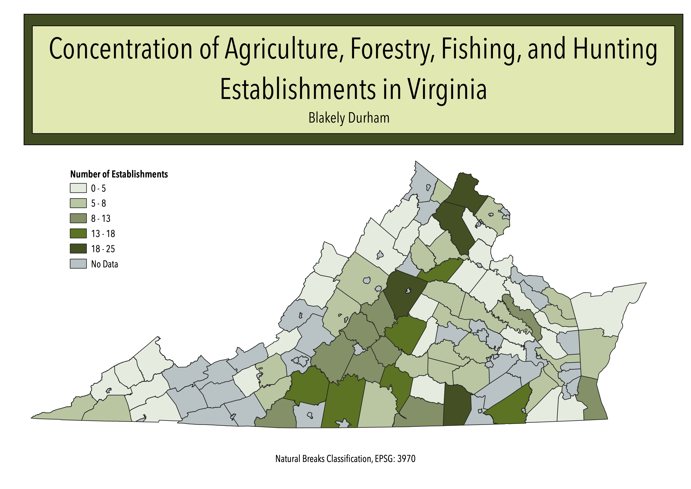

Homework 6 Part 1: Census data choropleth

This map shows the number of Agriculture, Forestry Fishing, and Hunting establishments in each county and independent city in Virginia. This grouping of establishments is based on the 2017 North American Industry Classification System. The establishments within this sector include farms, ranches, greenhouses, and hatcheries. Research and conservation establishments are not considered a part of this sector.
Data used for this project
Cleaned csv dataset
1000 in data added to indicate no data
Virginia Counties geoJSON